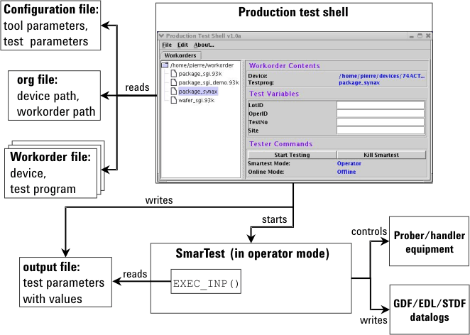

Implementation details for operator mode
In order to start SmarTest in operator mode, the shell issues the call
/opt/hp93000/soc/prod_env/bin/HPSmarTest -O <workorder_name> &
As illustrated in Custom shell in operator mode, the following figure also shows a test shell with SmarTest running in operator mode, but this time with emphasizing the structure of the test shell.
